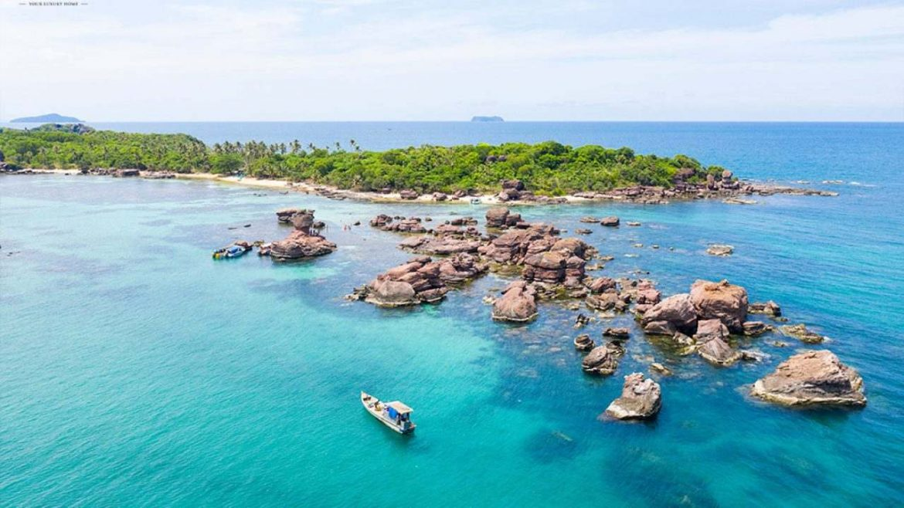
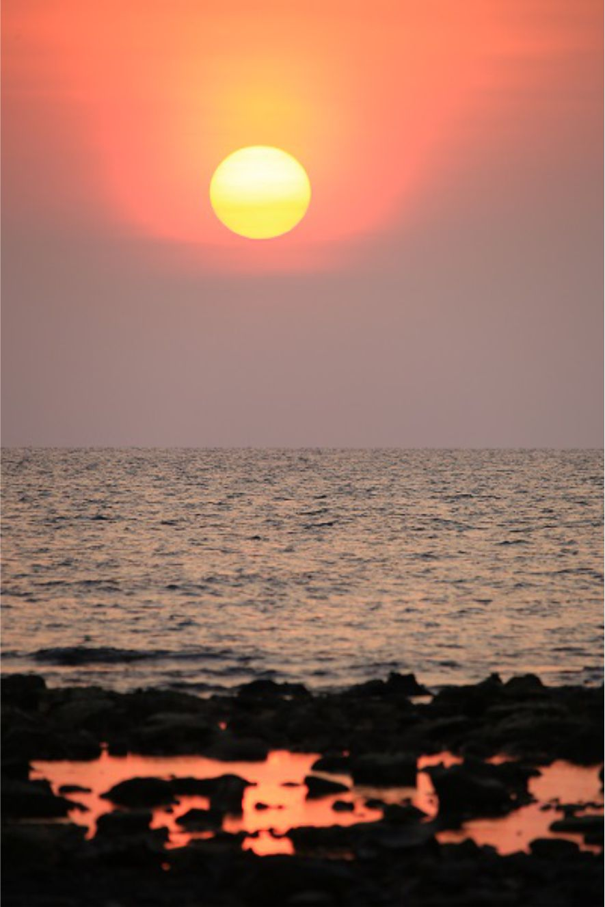

Phú Quốc được ví như một thiên đường biển đảo đẹp nhất Việt Nam. Ngoài
việc sở hữu vẻ đẹp của thiên nhiên, không khí của đất trời, Phú Quốc còn
được mẹ thiên nhiên ưu ái trao tặng những bãi biển cực đẹp với làn nước
trong veo, xanh ngát. Lưu lại top 10 bãi biển đẹp nhất Phú Quốc bên dưới
để vi vu cùng gia đình, bạn bè.
Bãi Rạch Vẹm
Bãi Rạch Vẹm nằm ở phía Bắc của đảo ngọc Phú Quốc. Vị trí thuộc xã Gành
Dầu, cách thị trấn Đông Dương 40km. Bãi Rạch Vẹm nổi tiếng với bãi cát
trắng mịn màng với khung cảnh hoang sơ. Điểm nổi bật ở nay đây là sao
biển, bạn sẽ phải bất ngờ với những chú sao biển tung tăng dưới mặt
nước. Thời gian đẹp nhất là từ tháng 11 đến tháng 3 năm sau nên đừng bỏ
lỡ nhé.

Bãi Gành Dầu
Bãi Gành Dầu thực chất là một mũi đất nhô thẳng ra biển. Ấy thế mà nơi
này lại trở thành một điểm đến thú vị cho lữ khách tứ phương. Dáng vẻ
thanh bình và hoang dã của bãi Gành Dầu đã thu hút nhiều du khách đến
với vị trí phía Tây Bắc của đảo ngọc.
Hòn Đồi Mồi
Hòn Đồi Mồi là một món quà của tạo hóa chưa được khám phá. Đối diện với
Vinpearl Phú Quốc, hòn Đồi Mồi ẩn mình với giản đơn vốn có. Nếu bạn là
người yêu thiên nhiên và những gì thuộc về tạo hóa nguyên sơ, hãy đến
đây. Buổi chiều hoàng hôn sẽ giúp tâm hồn bạn được vỗ vễ nhẹ nhàng.


Nói đến du lịch thì không thể bỏ qua một hoạt động thú vị là cắm trại.
Hoạt động cho phép bạn hòa mình với thiên nhiên, tận hưởng khí trời và
gió nhẹ. Trong các địa điểm du lịch thì có lẽ Đà Lạt là nơi được lựa
chọn bởi sự mát mẻ của cao nguyên Lâm Viên. Cùng điểm qua top 10 điểm
cắm trại ở Đà Lạt cho chuyến đi sắp tới nhé.
Trước chuyến đi, bạn và mọi người cần lên kế hoạch và chuẩn bị các
vật dụng cần thiết.
-
Địa điểm: Nơi mà bạn và mọi người sẽ dừng chân và sống ở đó vài ngày.
Do đó cần phải quan tâm về vị trí di chuyển, không gian và sự an toàn.
-
Thời tiết: Chắc chắn bạn sẽ không thích cắm trại vào ngày mưa đúng
không? Hãy xem thời tiết và lựa chọn thời gian Đà Lạt không mưa nhé.
-
Vật dụng: Lều bạt, dây thừng hay đồ dùng vệ sinh cá nhân là không thể
thiếu. Ngoài ra trời đêm khá lạnh nên hãy chuẩn bị áo ấm hoặc áo giữ
nhiệt.
-
Đồ ăn: Một điều quan trọng phải nhắc đi nhắc lại nhiều lần. Nếu khu
cắm trại ở xa đường lớn hoặc khu bán đồ ăn, hãy chuẩn bị đồ ăn nhanh.
Đồi Thiên Phúc Đức
Không khí trong lành và có thể ngắm nhìn toàn bộ Đà Lạt đã giúp
địa điểm này trở nên phổ biến. Bình minh và hoàng hôn có lẽ là hai
khoảnh khắc bạn không thể bỏ lỡ khi dừng chân tại đây. Vì đường đi đến
đồi hơi khó khăn nên bạn cần tra cứu trước khi xuất phát. Đôi khi đây là
cũng 1 đặc điểm thú vị các bạn trẻ muốn thử sức để chinh phục.
Địa chỉ: Phường 7, Thành phố Đà Lạt, Lâm Đồng
Đồi Đa Phú

Là một địa điểm cắm trại mới nhưng chính sự hoang sơ nơi đây là lựa chọn
của nhiều bạn trẻ. Khác với đồi Thiên Phúc Đức, bạn có thể dễ dàng di
chuyển bằng xe máy đến đồi Đa Phú.
Bầu trời đêm đầy sao, bình minh rực rỡ hay hoàng hôn nhẹ nhàng đang chờ
đợi bạn. Đừng bỏ lỡ những khoảnh khắc tuyệt vời cùng bạn bè tại đây nhé.
Địa chỉ: Phường 7, Thành phố Đà Lạt, Lâm Đồng
Hồ Tuyền Lâm
Đường đi đến vị trí cắm trại bên hồ Tuyền Lâm khá đơn giản và dễ dàng
khi di chuyển. Chỉ cách trung tâm Đà Lạt khoảng 6km về phía Nam giúp
việc xác định vị trí thuận tiện.
Khí hậu trong lành cũng view hồ xinh đẹp sẽ mang đến cho bạn không gian
đẹp không tưởng. Sự tự nhiên của núi rừng và thác nước xung quanh đang
chờ đợi khám phá.
Địa chỉ: Phường 4, thành phố Đà Lạt, Lâm Đồng
Làng Cù Lần
Một bản làng nhỏ bình yên nằm gọn gàng dưới chân núi Langbiang là điểm
đến tuyệt vời. Thiên nhiên hoang sơ và mộc mạc mang đến những giây phút
bình yên.
Thời điểm tháng 8 – tháng 9 là lúc hoa Pơ Ra Nhằng nở rộ, đừng bỏ lỡ
khoảnh khắc này. Tuyệt vời hơn khi lều trại của bạn được bao bọc bởi đồi
thông bạt ngàn, đúng không?
Địa chỉ: ĐT722, Lát, Lạc Dương, Lâm Đồng
Copyright © 2021. Designed and Deverloped by KHOA